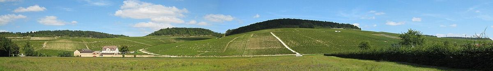

BLANC
Chablis, dans le département de l'Yonne, est le vignoble le plus septentrional de la Bourgogne et se consacre exclusivement au chardonnay. Ses blancs, à l'acidité vive et au caractère minéral, sont associés aux sols de marnes kimméridgiennes.

La viticulture autour de Chablis s'est développée au Moyen Âge sous l'impulsion des moines cisterciens de l'abbaye voisine de Pontigny. Grâce à l'Yonne, qui permettait d'acheminer le vin vers Paris, le vignoble de la région atteignit une grande étendue avant la crise du phylloxéra, à la fin du XIXe siècle. Le fléau, la concurrence des vins du Midi transportés par le chemin de fer et les gelées réduisirent considérablement les surfaces, qui ne commencèrent à se redresser durablement que dans la seconde moitié du XXe siècle, avec la généralisation des systèmes de lutte contre le gel.
Chablis est plus proche de la Champagne que de la Côte-d'Or et connaît un climat semi-continental frais, aux hivers froids et aux étés modérés. Les gelées de printemps constituent le principal risque ; pour les combattre, on utilise des chaufferettes installées entre les rangs et l'aspersion d'eau, qui forme une gangue de glace protectrice autour des bourgeons. La maturation lente favorise des vins à l'acidité élevée.
Les meilleures vignes reposent sur les marnes et calcaires du Kimméridgien, une formation du Jurassique supérieur riche en fossiles de petites huîtres, Exogyra virgula. Cette même formation se retrouve à Sancerre et, de l'autre côté de la Manche, dans le sud de l'Angleterre. Les secteurs de Petit Chablis se situent principalement sur des calcaires plus récents du Portlandien.
Chablis compte quatre niveaux : Petit Chablis, Chablis, Chablis Premier Cru et Chablis Grand Cru. Les premiers crus se répartissent sur les deux rives du Serein ; parmi les plus connus figurent Montée de Tonnerre, Fourchaume, Mont de Milieu, Vaillons et Montmains. Le grand cru occupe un coteau unique exposé au sud-ouest, sur la rive droite du Serein, face au bourg, et se divise en sept climats : Blanchot, Bougros, Les Clos, Grenouilles, Preuses, Valmur et Vaudésir. En leur sein, la parcelle appelée La Moutonne, entre Preuses et Vaudésir, bénéficie d'une reconnaissance traditionnelle mais n'est pas un climat officiel à part entière.
Le seul cépage autorisé est le chardonnay. Les chablis se distinguent des autres vins de Bourgogne par un profil plus tendu et plus austère, avec des notes d'agrumes, de pomme verte et souvent un caractère qualifié de minéral ou de salin. De nombreux producteurs fermentent et élèvent leurs vins en cuve inox pour préserver cette fraîcheur, tandis que d'autres recourent à la barrique, surtout pour les premiers et les grands crus, capables de bien vieillir pendant de nombreuses années. Les effervescents de la région sont élaborés sous l'appellation Crémant de Bourgogne.